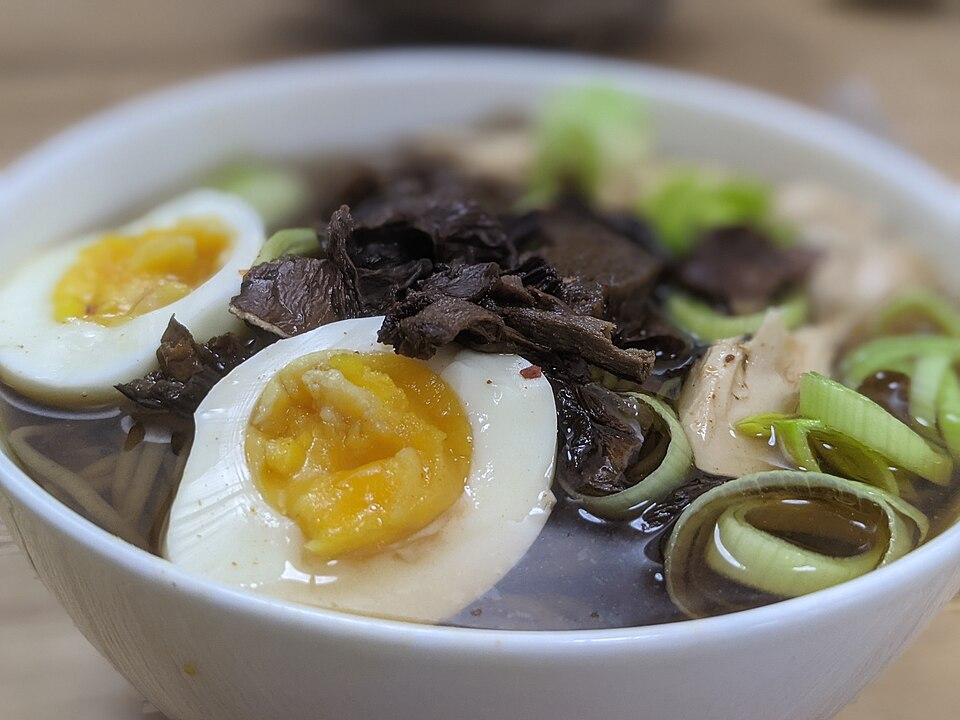

Ramen

Description
Noodles, pork belly, and broth. Ramen broth is a complex liquid,
primarily composed of a flavorful pork stock and a concentrated,
bold seasoning called tare, which can include ingredients like soy sauce, miso, and mirin.
The balance between the subtle foundation of the stock and the powerful tare
is what defines a memorable ramen broth.
Ingredients
- Pork broth
- Red capsicum
- Green onion
- Carrot
- Celery
- Garlic
- Soy sauce
- Ginger
- Pepper
- Cooked pork belly
- Ramen noodles
- Soft boiled eggs
Steps
- Combine broth, capsicum, green onions, carrot, celery, garlic, soy sauce, ginger, and pepper
- Stir pork and noodles into a pan, cook until noodles are tender
- Serve with soft boil eggs
Home